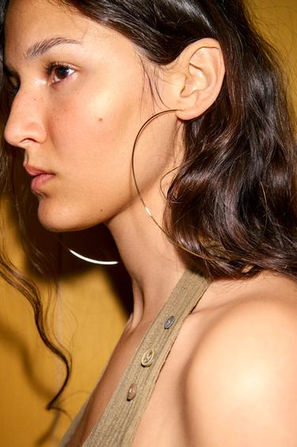
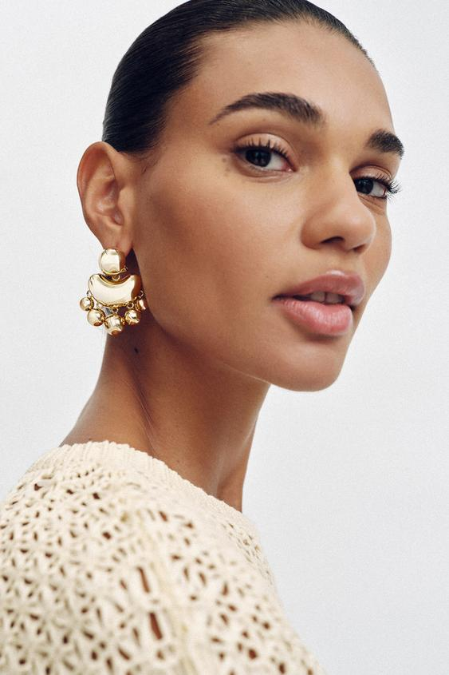
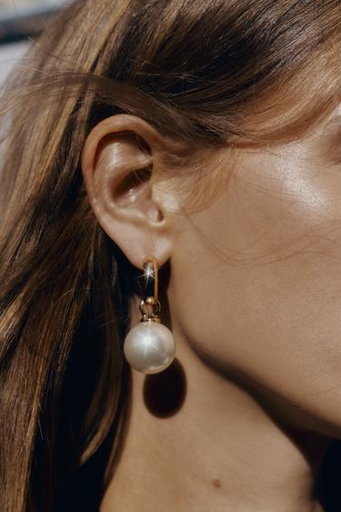
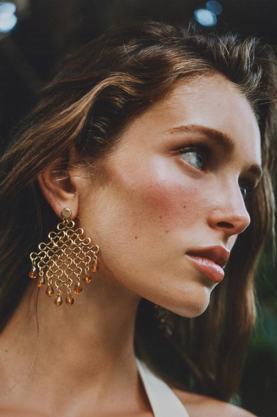
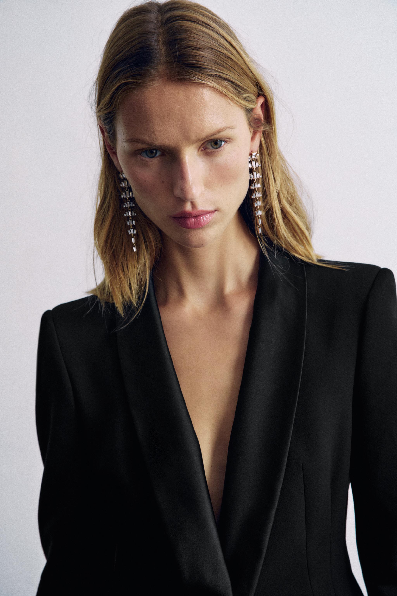

一件简单上衣，配贴耳的小耳钉，装饰主要留在耳垂附近；换成细大圆环，脸侧便多出一圈清楚的弧线；换成长款亮饰，视线又会沿着耳侧向颈部移动。耳环虽然占据的面积不大，却靠近面部，容易改变一套穿搭首先被注意到的位置。
挑选耳环，可以先看三件事：它在脸旁形成什么形状，表面怎样反光，与头发、领口之间还有多少空间。金属、珍珠、圆环和垂坠各有不同的表现，但它们的气质需要放回整个人的形象中判断。下面结合六张ZARA官方图片，比较这些关系，并说明怎样试戴。
先分清：佩戴方式、形状和材质是三回事
耳钉通常贴近耳垂，正面可能是一颗小珠，也可能是一块面积很大的金属片。圆环以曲线围出空间，可以贴耳，也可以大到接近下颌。垂坠款从耳垂向下延伸，下面可能连接细链、金属片、珠子或流苏。这些名称主要帮助理解结构，彼此也会重叠：一只圆环下面加上珠子，同时具有环形和垂坠的特点。
耳夹和耳骨夹则更侧重固定方式。是否需要耳洞，要看实际结构；商品英文里的“butterfly closure”一般指穿耳针配蝴蝶耳堵，不能因为出现“clip”一词就当作无耳洞耳夹。没有耳洞时，应确认夹口、受力位置和商品说明。
材质又是另一个维度。金色不等于黄金，银色不等于纯银；镀银说明的是表面处理，也不能直接当作整件银饰。本文图片中的珍珠状饰件是仿珍珠，相关款式的官方说明或成分包含树脂、亚克力等材料。讨论它们时，主要观察可见的颜色、光泽和形状，不用外观替商品判断价值。
这些区别很实际：同样叫“珍珠耳环”，小颗贴耳、金属包边的大钮扣和长链上的珠子，对整套形象的影响可能相差很大。
细圆环：直径很大，视觉分量仍然可以轻

图1：ZARA细大圆环耳环，款号1856/056/303。来源：ZARA官方商品页。
这只圆环从耳垂延伸到颈侧，直径相当醒目，金属线本身却很细。圆圈内部大部分仍是皮肤、头发与背景，没有被实心材料填满。它因此能够画出一个很大的轮廓，同时保留透明、轻巧的观看效果。
图中的波浪短发有一定蓬松度，耳环靠近头发，却没有完全被遮住。金属线在发丝之间时隐时现，亮处形成连续的弧线。上衣肩带、纽扣和耳环都是偏暖的颜色，但它们的形状不同，细节之间有联系，也各自可辨。
这说明“大耳环”不能只按直径判断。把细线换成粗管，或将圆圈填成一块圆盘，即使外缘大小接近，脸侧的实心面积和反光面积也会增加，装饰便更有分量。这个假设比较改变的是结构，而不是单纯的尺寸。
细圆环常能给基础背心、衬衫或针织增加明确的线条。它的作用偏向勾画轮廓；厚圆环和实心耳饰则更容易形成集中、饱满的块面。想让耳环明显但不占满脸侧时，可以先比较环的粗细与内部留空，再决定直径。
金属片：光泽怎样形成饱满、醒目的装饰

图2：ZARA浮雕金属片耳环，款号1856/218/303。来源：ZARA官方商品页。
这副耳饰的上端贴近耳垂，中间有较宽的弧形片，下方连着数个小垂饰。亮面金属在不同朝向上出现明暗变化，形成连续的、带体积感的装饰。它没有图1那样大的外缘，却因实心部分较多而显得饱满。
人物将头发向后收起，耳廓和下颌旁没有太多发丝干扰，金属片的形状便能清楚出现。身上的米白色镂空织物保留手工纹理感，金属的光滑亮面与织物的孔洞、线结形成对照。耳饰因此既有装饰性，也与较松动的衣料联系起来。
同样的金属耳饰，如果搭配表面光亮的衣服、浓密的首饰和精细发型，整套形象的装饰强度可能继续增加；换成哑光棉布和简单领口，金属反光会更集中。这些差别来自相邻材料的关系，不能仅用“金色显贵”解释。
金色偏暖、银色偏冷，可以作为配色观察的起点，但不必立即推成肤色规则。衣服上的纽扣、眼镜框、腰带扣，以及周围的灯光，都会参与最后的观看效果。镜面、拉丝、浮雕和做旧表面之间的区别，有时比金银颜色的区别更明显。
选择金属耳环时，还可以看亮点是否集中。光滑大面容易出现清楚的高光，很多小片则将亮点分散。前者更像一个有体积的形状，后者在动作中可能显出更细碎的变化，适合的服装重点也会不同。
珍珠的气质，要连同尺寸和金属边框一起看

图3：ZARA仿珍珠圆环垂饰，款号1856/346/303。来源：ZARA官方商品页。
这件耳饰以一颗浅色珠子为主要观看点，上方用细金属环和连接件悬挂。白色圆面在深色头发旁比较容易辨认，表面亮部有渐变，与细金属边缘的闪光不同。它的柔和感，首先可以从圆润形状、浅色表面和光泽变化中理解。
这张图也提示，摄影光线会改变首饰印象。珠子下方在颈侧投出清楚的阴影，金属连接处出现亮点，使画面显得更鲜明。不能把照片里的全部柔和或强烈效果，都归给“珍珠”这个材料名称。
小颗、贴耳的珍珠耳钉，通常把浅色亮点留在耳垂附近；珠子变大、位置降低，就会形成更明确的装饰。若下面继续接长链，它又会参与颈侧的纵向线条。这里的差别是尺度与位置，未必对应某一个年龄或某一种性格。

图4：Willy Chavarria × ZARA仿珍珠钮扣耳环与牛仔造型，款号4736/085/303。来源：ZARA官方商品页。
这套造型中，珍珠状中心被较大金属边框包围，耳饰贴近耳垂，形状更接近一枚钮扣。头发收起、颈侧清楚，两侧浅色饰件能够从完整穿着中被辨认出来。牛仔衬衫式短裙有翻领、前门襟、胸袋和宽松衣袖，耳饰为这些熟悉的休闲细节加入了较集中的装饰感。
珍珠在这里并没有把整套衣服变成柔美礼服。金属边缘、贴耳的大块形状、牛仔布与较利落的发型，共同决定了最后的形象。这是一个有用的对照：判断珍珠耳饰时，除了看珠子，还要看托座有多大、边缘有多硬、衣服在表达什么。
若希望日常穿着只增加一点细节，可以先试较小、结构简单的款式；希望耳饰在全身照中也清楚，可以比较更大的钮扣形、吊坠或多颗排列。选择的依据是想让装饰出现在哪个距离，而不是把珍珠固定成“温柔”或“成熟”的标签。
垂坠款：长度、展开方向和摆动一起起作用

图5：ZARA多片式金属及珠饰耳环，款号4736/231/303。来源：ZARA官方商品页。
这副耳饰从上方的小圆片向下展开，金属环连接成网状，下缘分布几颗偏琥珀色的水滴状饰件。它同时向下延伸、向两侧扩展，形成接近扇面的轮廓。内部留有很多空隙，因此虽然面积较大，仍能透出后方的头发和皮肤。
它并不是一条单纯的竖线。细链式耳饰可能强调从耳垂向下的方向，这种网状款却还会增加下颌旁的横向存在感。讨论“长耳环显脸小”时，如果只看长度，就会遗漏宽度、末端形状和亮点分布。
静态照片可以看清连接结构，却不能代替佩戴中的动态观察。多环、多片结构通常允许部件之间有一定活动，实际摆幅还取决于连接方式、重量和动作。试戴时转头、说话、低头，才能知道它会不会碰到头发、衣领或肩部。
长款并非只能出现在晚间场合。没有密集亮饰、线条较细的垂坠款，可以与日常衣服形成轻微的动作变化；带有多层亮饰、集中反光的长款，更容易让形象靠近晚装或活动造型。使用情境与结构有关，不能只凭长度分配场合。
脸型是观察线索，不是配对答案
圆脸配长款、长脸配圆环，是常见的选购口诀。它提供了一个关于横向与纵向的粗略思路，但脸不是一张孤立的轮廓图。颧骨、下颌、耳垂位置、头发体积、颈部和衣领都会同时进入视野。
更有效的办法，是找到耳饰最宽、最亮、最密的位置。如果一副耳饰的最大块面刚好停在下颌旁，那里就多了一个明显形状；换成上端小、下端细的款式，观看重点也会移动。两副耳环即使一样长，对同一张脸的作用仍可能不同。
也可以观察耳饰与脸部轮廓是接近还是反差。圆润饰件能重复脸部已有的曲线，几何直线则增加另一种方向。重复可以显得协调，反差可以更鲜明，二者没有固定的优劣。希望突出自己的圆润特征，与希望增加利落感，本来就是不同目标。
照片还会受到镜头距离、角度与光线影响。对着近距离前置镜头判断一次，很容易把拍摄差别当作耳环差别。比较时尽量保持相近距离和角度，看看正面、侧面及包含肩部的画面，比套用脸型表更容易找到实际原因。
头发、领口与眼镜：耳环周围需要多少空间
把头发收起，原本藏在发间的一对耳环可能突然很醒目；披发时，同一件饰物又可能只在转头时露出。露出的程度会改变它参与造型的方式，并非每次都需要完整展示。
短发和盘发让耳侧边界比较清楚，贴耳块面、圆环或长款更容易被辨认。长发则需要留意头发是否反复盖住饰件，细链、尖角与连接处是否勾到发丝。希望若隐若现，可以保留遮挡；希望一眼看清，可以把一侧头发别后，再观察整套比例。
领口决定了耳饰下方的环境。高领、翻起的衬衫领、围巾或蓬松肩部，可能已经占据颈侧空间；长耳饰如果落入其中，轮廓会变得拥挤，也可能发生碰撞。低一些或较开放的领口，通常为垂坠形状留下更多可见背景，但不意味着长耳饰必须配低领。
佩戴眼镜时，还要考虑镜腿、镜框和耳环靠得很近。粗框与大金属块面同时出现，会让面部周围的形状变多；细框配细环，线条联系更清楚。想要丰富层次，可以保留差异；希望观看重点集中，就减少其中一部分的体积或反光。这里需要看实际叠加后的结果。
放回整套衣服：耳环为什么能改变西装的气氛

图6：ZARA长款金属亮饰耳环与黑色西装，款号4548/278/303。来源：ZARA官方商品页。
这套造型给出了完整的观看关系：黑色西装面积较大，翻领向下延伸，胸前没有醒目的项链；长耳饰由多枚浅色亮饰串联，装饰集中在脸的两侧。头发拨到耳后，耳环轮廓能从发间露出。
西装提供连续的深色块面，耳环增加细碎反光。虽然首饰的实际面积远小于衣服，但因为靠近面部，又与周围颜色形成差异，仍足以建立重点。它让一件熟悉的西装具有更明显的活动或晚间造型意味。
假设保持同一套衣服，只换成贴耳的小耳钉，装饰会更靠近耳垂，也更依赖近距离观看；换成大金属钮扣，亮点可能集中成两个块面；换成细圆环，则会在脸侧增加曲线。这些是假设对照，不是实际拍摄的换装实验，但有助于理解变量。
搭配项链时，也需要看两个重点是否能共同成立。长耳饰、浓密项链、装饰领口和大胸针如果同时出现，整套衣服会更繁复；这可以是明确的风格选择。若只是想让耳环清楚，先减少领口附近同样醒目的装饰，通常更容易判断它本身的作用。
整套协调也不必依赖首饰成套。耳环与戒指可以只重复金属颜色，耳环与纽扣可以呼应圆形，耳环上的珠子也可以与衣服里的浅色相接。重复一两条可辨认的线索，就已经能产生联系；每一件都同样醒目时，反而需要更认真安排主次。
怎样把这些比较用到试戴中
可以先穿自己真正会搭配的衣服，再比较耳环。商品近照能看清细节，却不能告诉人全身穿着时它会占据多大位置。对耳饰的期待也可以具体一点：是给日常上衣补一个亮点，还是让约会、聚会或活动造型更完整？
| 想改变的效果 | 可以优先比较 | 试戴时看哪里 |
|---|---|---|
| 只增加近距离细节 | 小耳钉、贴耳小环、单颗小珠 | 耳垂附近是否清楚，头发是否遮住 |
| 让脸侧轮廓明显一些 | 细大环、弧形或几何线条 | 外缘大小、线条粗细及内部留空 |
| 增加饱满的装饰感 | 金属片、大钮扣、带宽托座的珍珠款 | 实心面积、亮点与下颌的位置 |
| 增加向下延伸和动作变化 | 细链、水滴、网状或多片垂坠 | 长宽比例、末端分量与领口距离 |
| 让基础服装更适合活动 | 有明确形状或集中反光的款式 | 面部、胸前和服装之间是否各有重点 |
每次先换一个变量，比较更容易。试细环和粗环时，尽量保持直径相近；试长款和短款时，尽量保留相近颜色。否则同时换形状、颜色、发型和上衣，很难知道喜欢的是哪一处变化。
还应留意实际佩戴。照片无法可靠说明重量，体积小也未必轻；走动、戴口罩或围巾时是否勾挂，穿脱衣服时是否方便，都需要亲自检查。长时间佩戴是否舒服，和它在照片上好不好看，是两个都值得考虑的问题。出现拉扯、压痛或明显不适时，不必为了造型继续忍着。
选耳环最终是在安排脸部周围的形状、亮点与空间。理解这些关系之后，面对一副没见过的耳饰，也能从它的线条、表面和落点开始判断，再看它怎样与自己的头发、衣领和整套衣服一起出现。
资料范围：图片与商品结构核对ZARA官方地区站，访问于2026年10月31日。部分款式已售罄，作为造型案例保留，不列为现货购买推荐；款号用于识别。审美分析来自对应照片，图片光线不等同实际佩戴环境。
留言
由 Disqus 提供。